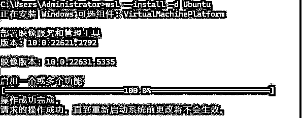
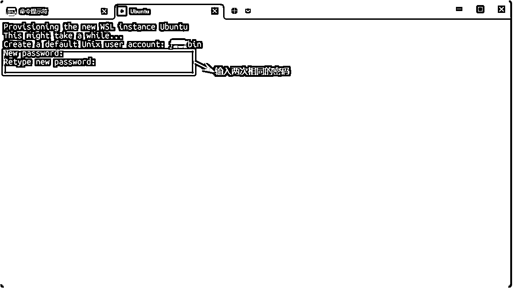

来源：https://ecnk7b23vmi7.feishu.cn/docx/Qm6vdILhLo1QYPxK5lycFmc3nBc
👫 我们知道个人是微弱的，但我们也知道整体就是力量。 —— 马克思
获取 Auth Token： ANTHROPIC_AUTH_TOKEN ：注册后在 API令牌 页面点击 添加令牌 获得（以 sk- 开头）名称随意，额度建议设为无限额度，其他保持默认设置即可
如何获取的你创建的令牌呢
这个地址后面在命令行中用到的：https://anyrouter.top
至此：你的令牌有了 还有 服务器的API地址也有了，开始安装Claude code吧。
由于 Claude Code 并不支持 Windows 的文件系统，所以不能直接在Windows的文件系统内部署，但仍可以通过WSL在Windows上部署，建议对Claude Code的操作均基于WSL安装的虚拟操作系统（如 Ubuntu）
如果我们想在 Windows系统下使用到Claude Code，是需要先安装一个叫 WSL（Windows Subsystem for Linux） 的工具。
就相当于在你的Windows平台上 安装了一个Linux系统，因为像 Claude Code 这样的工具，在 Linux 环境下运行得更稳、更快，就像实验室里做实验时，器材齐全、环境标准，才更适合做技术活。
❗❗❗这里需要注意的是，安装WSL，必须满足以下要求：
• Windows 11 或 Windows 10 21H2以上，专业版/工作站版/企业版（非家庭版，需支持Hyper-V）
• CPU 需支持且已在 BIOS/UEFI 中启用虚拟化 （不会开启的话，可以查百度，或者问AI）
然后弹出来cmd 窗口：
wsl --install -d Ubuntu
1）第一次安装WSL时如下图:

❗❗❗ 如果第一次安装不会的话，可以参考链接：
https://download.csdn.net/blog/column/12092261/140156953#WSL_5
2）因为本人之前安装过，所以直接就出来的是安装Ubuntu。
！！！！！！！！切记关掉科学上网
可能有小白不太懂Ubuntu是什么。
Ubuntu 和 Windows 一样，都是操作系统，不过 Ubuntu 属于 Linux 系统家族。
简单来说，Linux 是一个内核，是操作系统的核心部分，而 Ubuntu 则是基于这个内核开发出来的完整操作系统。

设置完密码后点击回车，然后进入ubuntu系统中：
至此 通过WLS 安装Ubuntu成功！！！！
Node.js就是能让JavaScript能在电脑上运行的工具。Claude Code需要它来安装一些扩展功能。
就像你玩游戏需要先装游戏引擎一样，这是基础设施。
curl -fsSL https://deb.nodesource.com/setup_22.x | sudo bash - 该命令用于在基于Debian或Ubuntu的Linux系统上自动安装或更新Node.js到指定版本（在这个例子中是22.x版本）
然后执行第二条命令：
sudo apt-get install -y nodejs 是一条在基于Debian或Ubuntu的Linux系统上安装Node.js的命令。
❗❗❗ 验证是否安装成功
输入 node -v
npm -v
出现具体的版本信息则代表环境安装成功，这里需要确保Node.js为18.0 或更高版本，之后就可以继续下一步了。安装 claude code了。
命令如下：
#复制这段命令到刚才的命令行，然后安装claude sudo npm install -g @anthropic-ai/claude-code
小插曲：
执行claude code 安装命令时出错了，如下：
这里需要注意：是因为刚才的npm的版本太低了，然后需要升级到执行的11.4.2版本，
然后执行系统提供的更新版本的命令就行了：
npm install -g npm@11.4.2
！！！！！！！！！！！！！！！
这里一定注意 要在sudo模式下，不然没有权限.
更新npm 版本的命令如下，命令行输入，然后回车输入刚才设定的密码进行执行：
sodu npm install -g npm@11.4.2
到此这个npm版本就更新成功了，
继续执行claude code 的安装，因为这个是国外的软件，所以需要科学上网的
：（PS）在没有科学上网的环境下一直没有安装成功，所以开了科学上网，然后一次性安装成功。
出现如下的版本号证明安装成功了，
上面的Auth Token 和API 地址就是刚刚前面创建的让你保存的东西、
#先创建一个项目文件夹，名称为testProject （这个自己可以随便设置） mkdir testProject #然后查看自己创建的目录 testProject，ls命令会列出当前目录下的所有的东西 ls
在您的项目目录下运行：
cd your-project-folder #### cd 后面 这个就是进入你刚才创建的文件夹 export ANTHROPIC_AUTH_TOKEN=sk-... #####（sk---也就是你刚才保存下来的令牌） export ANTHROPIC_BASE_URL=https://anyrouter.top ####（这个就是刚才的API 地址） claude #### 然后执行 claude命令就进入claude code了
最后输入 claude 就进入claude code 界面了:
运行后
开始在终端里和你的 AI 编程搭档一起写代码吧！GOGOGO !!!!🚀
❗❗❗❗❗❗❗❗❗ 踩坑：
这里注意，刚开始时我用的是几天前创建的令牌，然后怎么都进不去，然后我另外创建了一个新的令牌
然后又开了 科学上网，然后进去了，应该是开了全局的科学上网然后创建了cookie,然后我另外再次进入的时候，
不用开科学上网 也是可以直接使用的，但是在生成游戏的途中APi链接超时了，我又打开了科学上网，然后目前不知道是什么原因，目前也不清楚，正在探索中，如果后续知道原因的话，我会更新这个原因到这里的，❗❗❗❗❗❗❗❗❗
这个就是我用这个claude code 一句话创建的俄罗斯方块，是可以直接在浏览器中运行的，然后有点bug,但是总体不影响，bug:必须暂停后，空格开始不了了，还有最后几秒钟的时候，哪一行没有消除
有两种方式找到这个Ubuntu中的文件，
1、Win+R 然后打开了系统终端,输入 \\wsl$
第二种： win + E ,打开文件夹管理器，在最上面输入 \\wsl$
然后在哪里能找到刚才claude code创建的文件呢?
在你的cmd中使用 ls 查看需要拷贝的文件
使用pwd 查看当前需要使用的文件在那个目录底下，也就是当前处于那个目录底下
然后拿到路径后直接在 ununtu中找就行了。
❗❗❗❗❗
小提示：
Claude code 安装使用结束，然后搭配 作者：云舒的AI实践笔记 发布的claude Code 指令速查宝典
食用起来更香。
指令链接如下：
至此：claude code 安装成功，然后 代码运行成功，本人第一次写这个记录，有哪里写的不好的地方，还请多多指教。有什么问题，也可以直接留言。